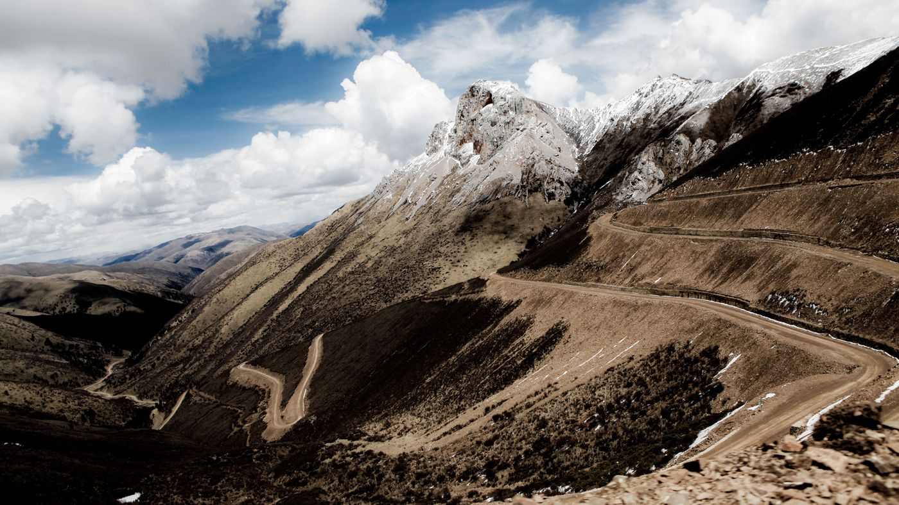
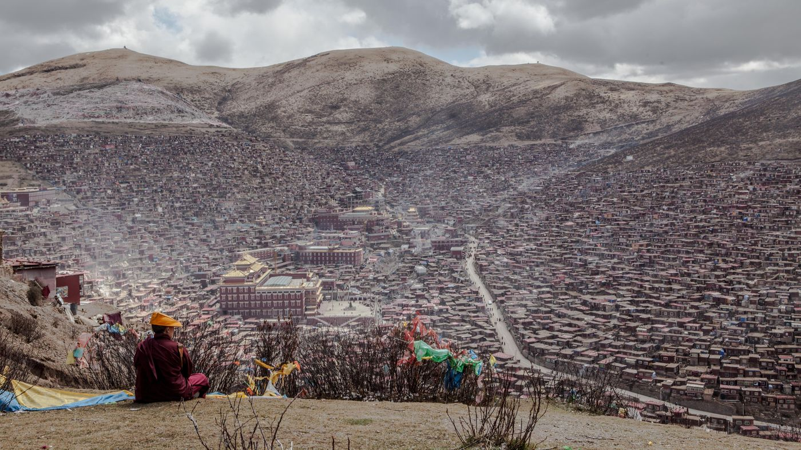

色达：宁静的日常和生死的边界
2021 · 4 · 9

八年前，我在四川漫游了一个多月。没有既定的路线和目的，只是漫游，看缘分会带我到何处。
在成都时，与同住青旅的旅人聊天，偶然间说起色达：藏在青藏高原的群山中，有着世界上最大的佛学院“喇荣五明佛学院”，和一处大型天葬台。我想去看一看，却并不知道该如何前往。
几日后的早上，我在青旅上铺睡得正香，突然被重重地弹了起来。匆忙披上衣服冲到楼下，从聚集的人群里听说，雅安地震了。下午消息传开，雅安伤亡惨重，急缺物资和人手。当夜我动身前往雅安，加入了前线的救援队，协助运送和分配物资、调查和汇总疾病信息。
过了几日，更多的救援队和物资陆续到达，我知道自己帮不上多少忙，是时候继续上路了。这几日里，遭遇了几次余震、暴雨、滑坡和房屋倒塌，看见了多少被夷为废墟的家，多少孑然一身守护着废墟的孩子、父母和爱人，和他们抹也抹不尽的泪水。
我和幸存下来的人们一样，在自然的无情和生命的脆弱面前不知所措，常常不知自己身在何处，更无所谓前路何方。我只知道是时候离开了。所以我背上队友赠予的帐篷，告别了队友们，向色达的方向出发。




四川西部位于青藏高原，在文化和语言上也属于藏区。高原上的春来得晚，四月仍是一片萧瑟。
川西山间的公路常常悬在崖边，一侧是静默神圣的雪山，另一侧是滚下悬崖的货车残骸。公路之外星星点点的聚落编织成了细小的路网，千百年来维系着人和马的交通。这些路网跨过溪流和海子，穿过松林和草甸，通往石头搭建的寨子。寨口的吊桥挂满了经幡，走在上面时木板在风中嘎吱作响。
一路搭车、拼车、乘公交，海拔越来越高，阳光越来越明亮透彻，云影与光斑在无垠的草原上交错。途经泸定、新都桥、道孚、炉霍，我终于抵达了色达佛学院。


学院藏在群山中，坐卧山谷间。山谷四周的山脊挂满了经幡，望出去是永恒的静谧与安详。终日的阳光照耀着雪山和溪流，还有沿着溪流散落的牧民和牦牛。每日清晨，僧人们爬上山脊，冥想、诵经，或只是静默地望着远方，再缓缓地走回学院。
高峰时期，学院有四、五万修行者，共同生活在小小的山谷里。人们晚上住在自己小木屋中，白天上课辩经、挑水做饭，在山路上来来往往。山谷里充满了烟火和生气，和山谷外的空旷形成了巨大的反差，让我有时分不清自己是在远离尘嚣的群山里，还是在热闹繁荣的小镇上。
过了几日，学院的生活慢慢变得没那么特别，更像是一座大学城。这里的人们衣食简单，但科目繁多。辩经时人们激动、生气或是开心，一如别处的日常，充满着情绪。晚上还有公开的讲座，像我这样的访客也可以参加，听上师解答修行路上的问题。
这里特别的是，对视都饱含善意，步伐都充满平和。有一日我在小木屋之间穿行，一位修行者邀请我进家坐坐。他拿出一碗酸奶，和一只勺子，用袖子擦了擦，递给了我。我只会说汉语，他只会说藏语。于是我们静默着相伴而坐，我满怀感激地吃下了这辈子吃过最酸的酸奶。



在佛学院附近的山谷里，有一座天葬台。附近的牧民家里有人去世后，先请高僧超度，再抬着遗体围转坛城七周，最后送来天葬台。
天葬意味着，遗体被秃鹫全部吞下，甚至包括所有的骨头。亡灵借此返回天空，方得从轮回里解脱。
到了天葬的时辰，附近的山坡上落满了秃鹫，黑压压的一片，每只站起来都接近一人高。几位出家人站在秃鹫们面前，在时辰未到时阻止它们前进。天葬师搬出遗体，开始将遗体肢解成小块，以便秃鹫能够全部吞下。秃鹫们等着，看着、嗅着、听着。
时辰到了，秃鹫们涌向坡底的天葬台，如黑色的潮水一般，跳着、飞着、抢着，发出咿咿呀呀的叫声。天葬师一身漆黑，站在秃鹫漩涡的中心，不紧不慢，继续把骨头敲碎，让死者的每一片都返回天空。
一旁的僧人一边摇拨浪鼓一边诵经，为亡灵超度。秃鹫们继续飞着、叫着，一直到天葬台上什么也不剩下。


天葬台附近弥漫着一种脂肪腐败后的气味，在我脑海中挥之不散，让我很长一段时间之后都不想吃肉食。最后我没有成为素食者，只是一直觉得，如果我生前吃下其他动物变成我的一部分，那死后融入其他动物回归自然，是再自然不过的了。